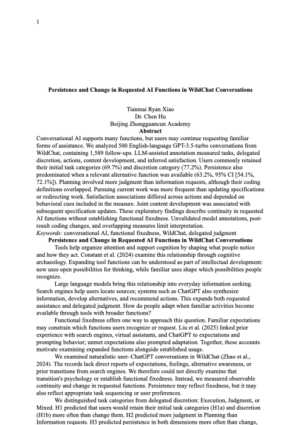
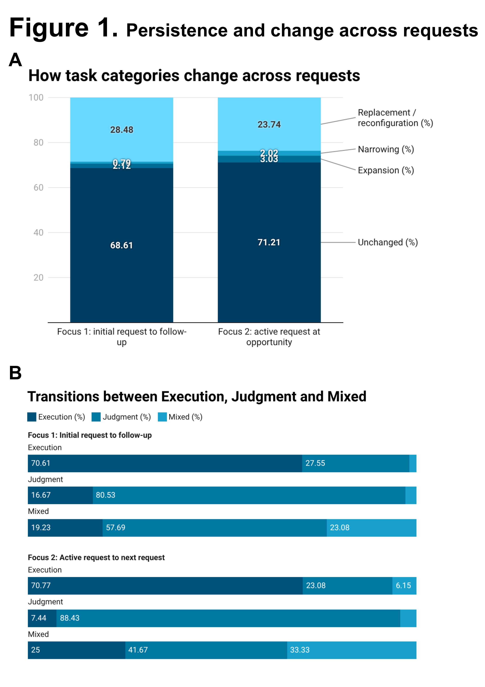
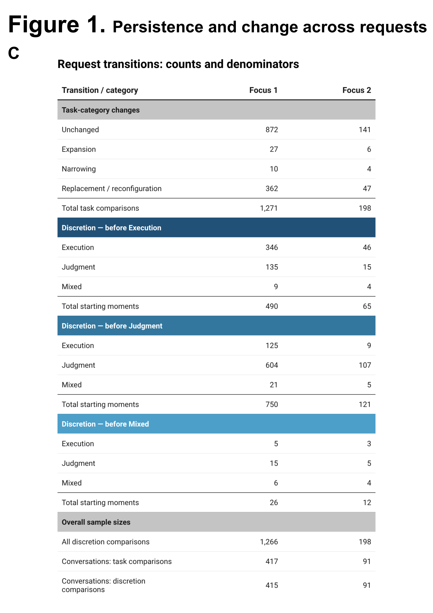
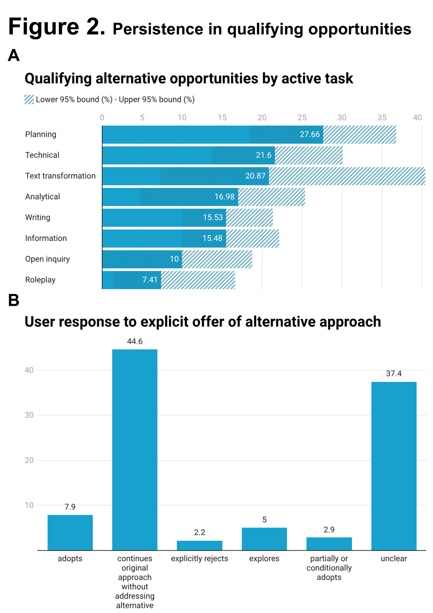
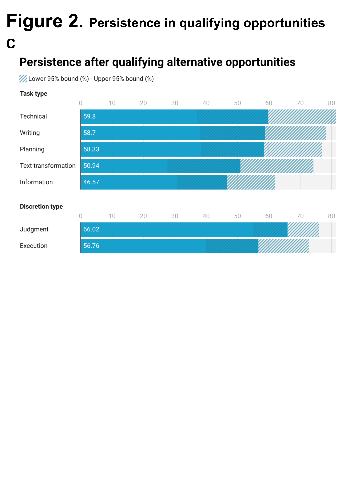
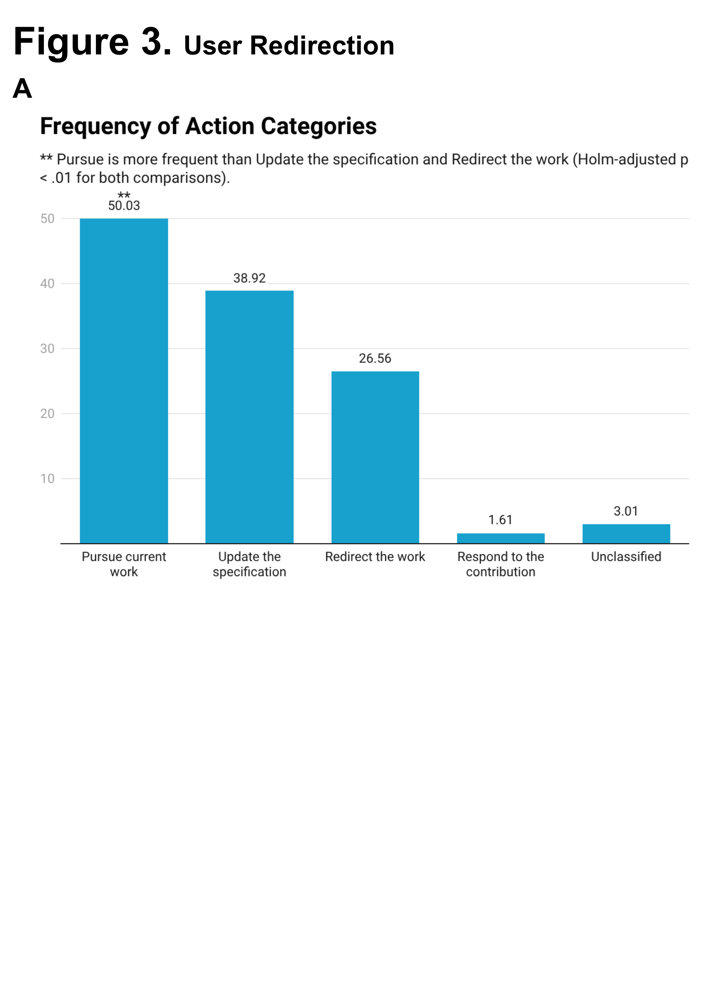
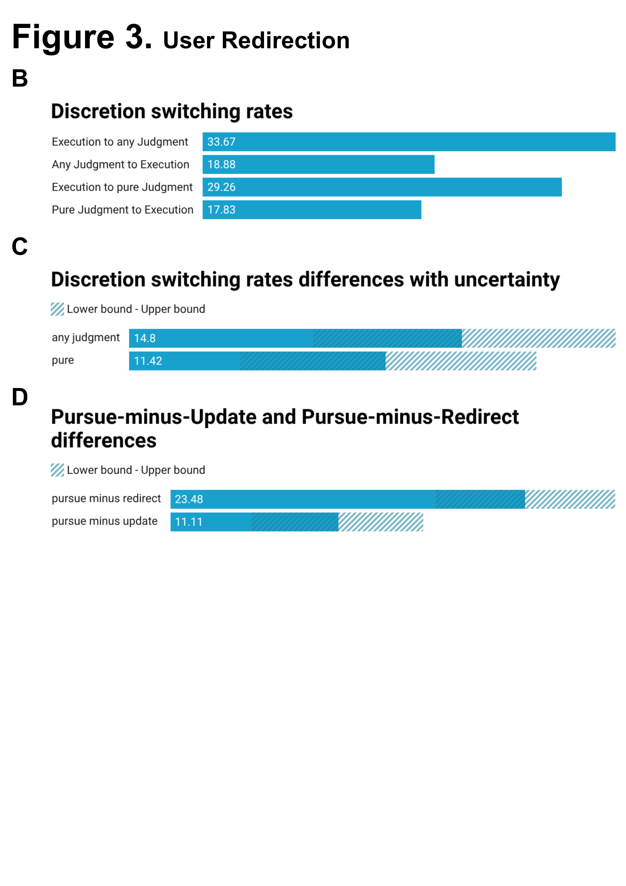
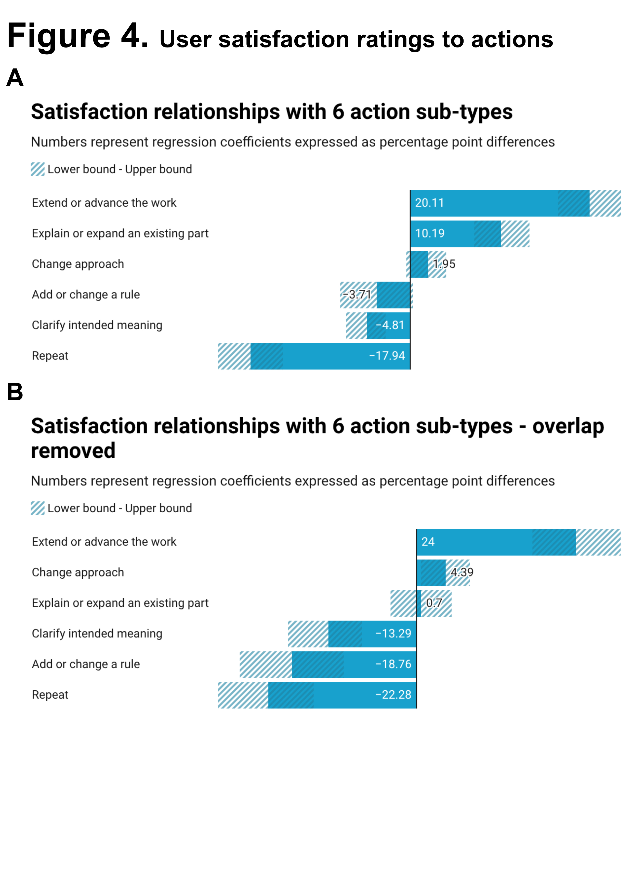
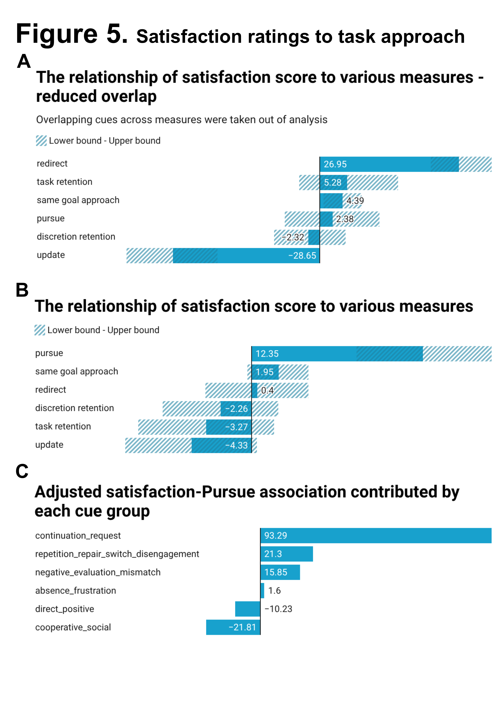
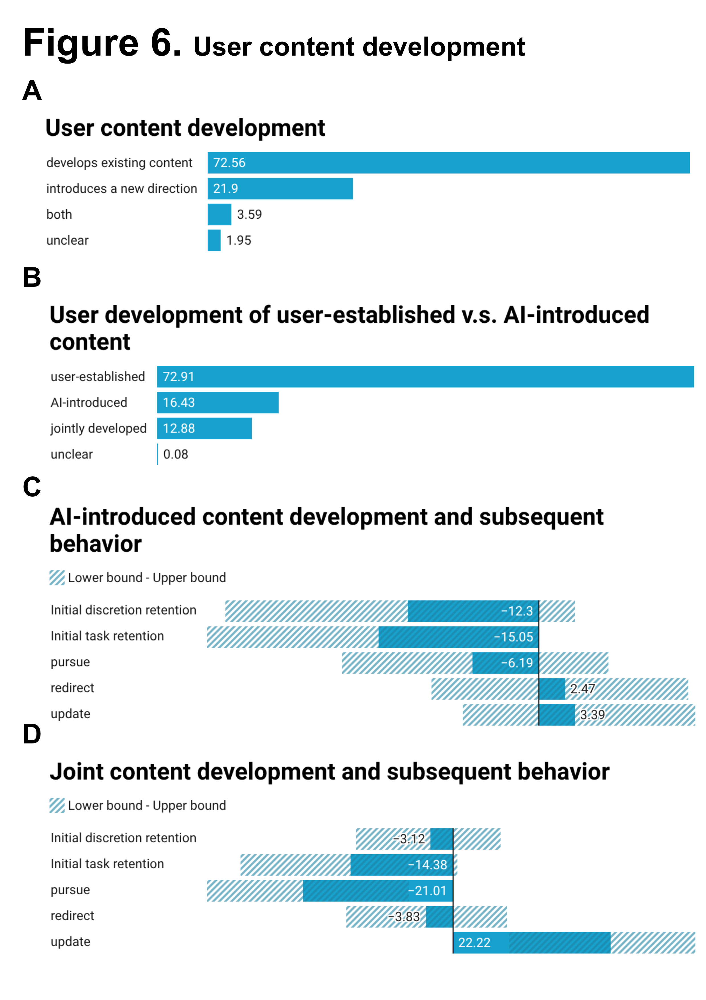

Research PortfolioPDF · Download02 / THEATREDownload my
Theatre RésuméPDF · Download
SSTP Research Outputs


Individual Computational Psychology Project Research Outputs

Download my research paperWord document · DOCXFigures from the study









1 / 9